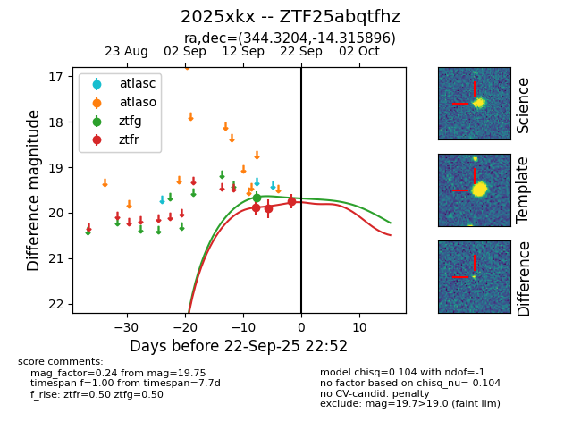
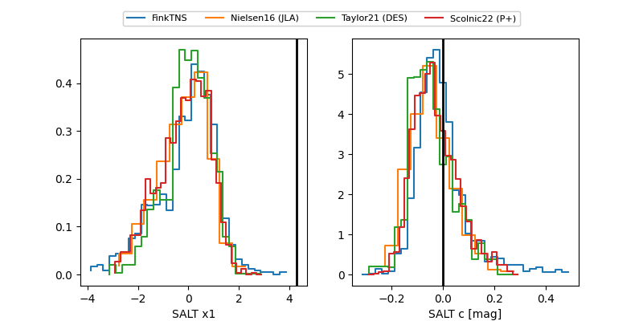

FINK: ZTF25abqtfhz
Lasair: ZTF25abqtfhz
ALeRCE: ZTF25abqtfhz
TNS: 2025xkx
YSE: 2025xkx
ZTF25abqtfhz (ztf,fink)
2025xkx (tns,yse)
equatorial (ra, dec) = (344.3204,-14.31590)
galactic (l, b) = (52.8864,-60.49566)


last ztfg=19.66, ztfr=19.75
1 ztfg, 3 ztfr detections